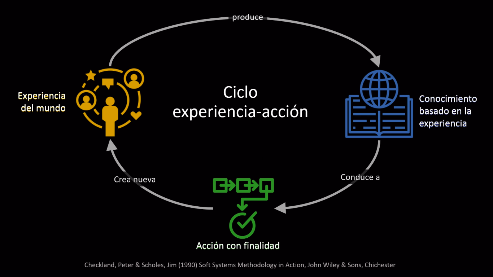
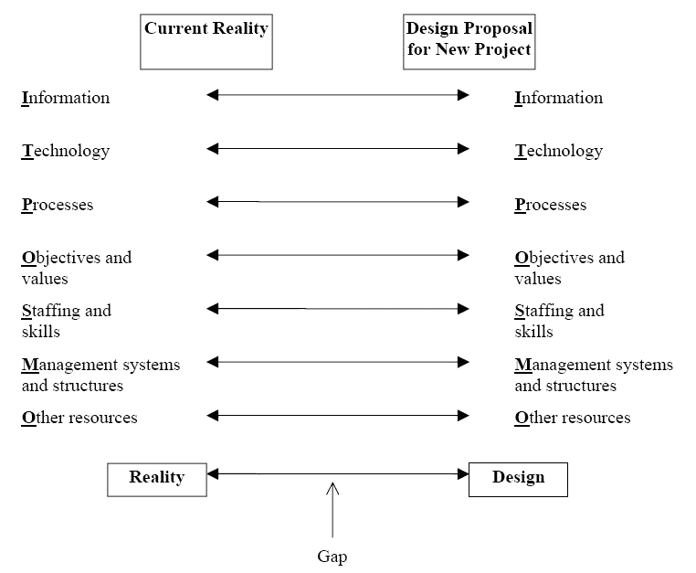
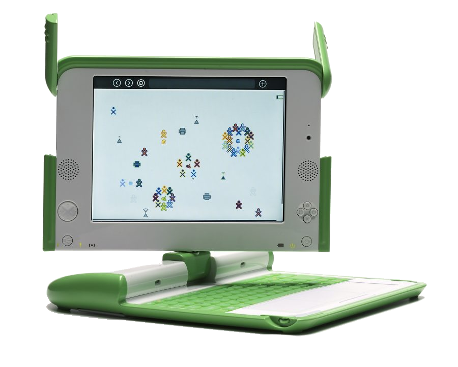

Created: 2023-09-19 mar 11:02
Juan Erasmo Gómez-Morantes
je.gomezm@javerianae.edu.co
Ingeniero de Sistemas y Computación, Universidad de los Andes
MSc en Ingeniería, Universidad de los Andes
PhD en Development Policy and Management, Universidad de Mánchester
Profesor del Departamento de Ingeniería de Sistemas, Pontificia Universidad Javeriana
Figura 1: Imagen generada con Bing Image Creator


Figura 2: El design-reality gap model. Tomado de (Heeks 2006)
Figura 3: Imagen generada con Bing Image Creator
[…] a charismatic technology derives its power experientially and symbolically through the possibility or promise of action: what is important is not what the object is but how it invokes the imagination through what it promises to do.
– (Ames 2019)
Construyamos un sistema para
¿Qué podría salir mal?
Figura 4: Imagen generada con Bing Image Creator
Figura 5: El design-reality gap model. Tomado de (Heeks 2006)

Figura 6: El OLPC XO-1